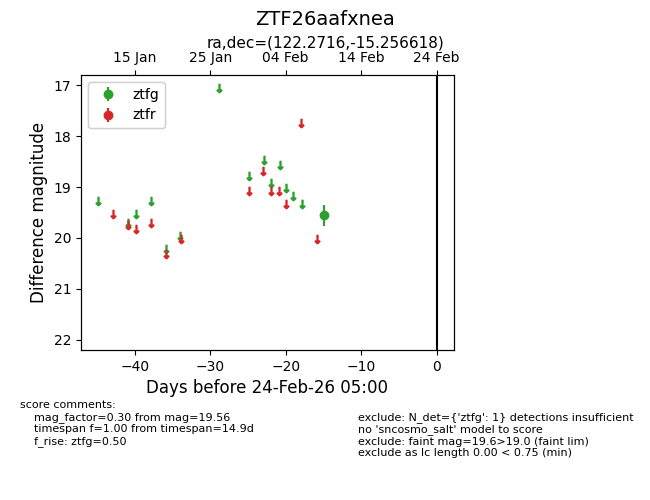
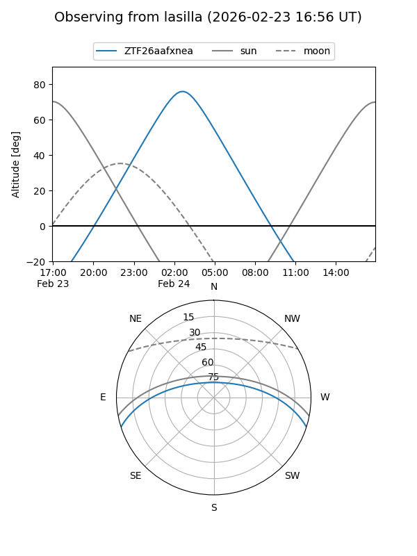
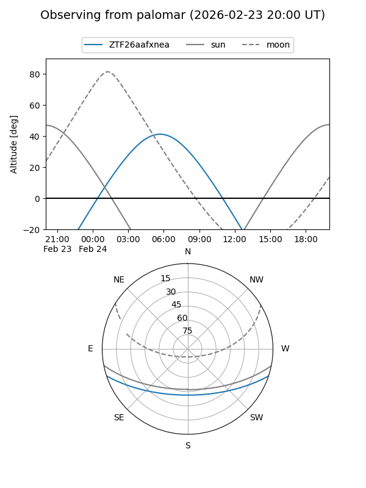

ZTF26aafxnea
Target ZTF26aafxnea at 2026-02-24 09:08
Aliases and brokers:
FINK: link
Lasair: link
ALeRCE: link
alt names
ZTF26aafxnea (ztf,fink_ztf)
Coordinates:
equatorial (ra, dec) = 122.2716,-15.25662
equatorial (HMS+DMS) = 08:09:05.19,-15:15:23.82
galactic (l, b) = (235.6201,+9.51953)
Flags:
Photometry:
last ztfg=19.56
1 ztfg detections
Lightcurve

Visibility


Additional plots